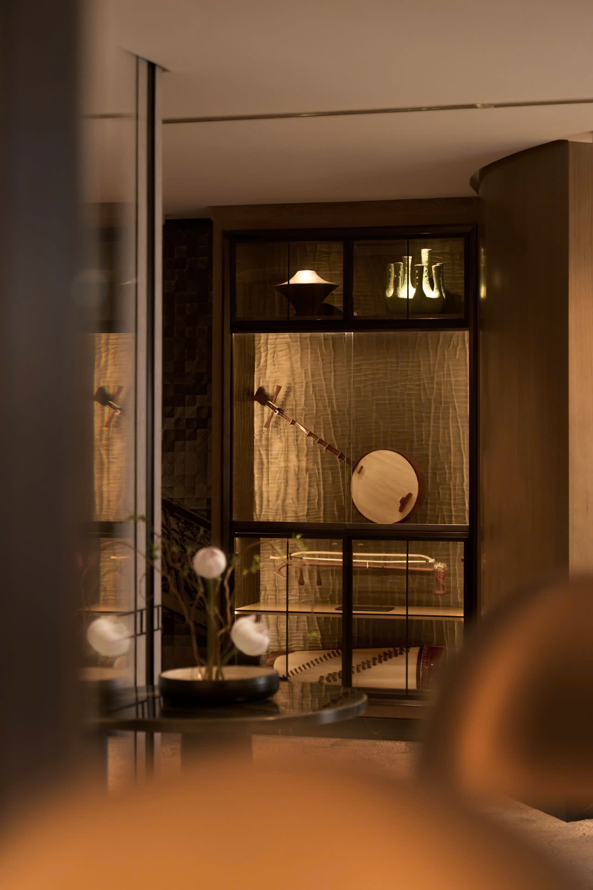
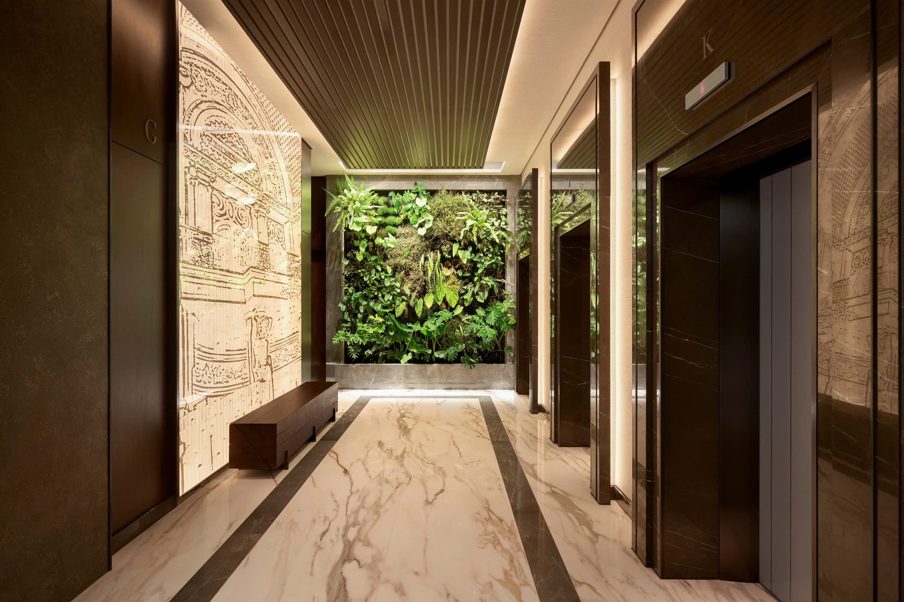
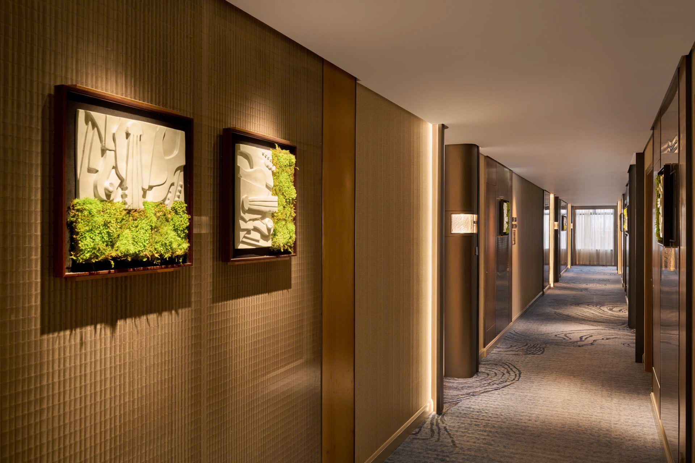
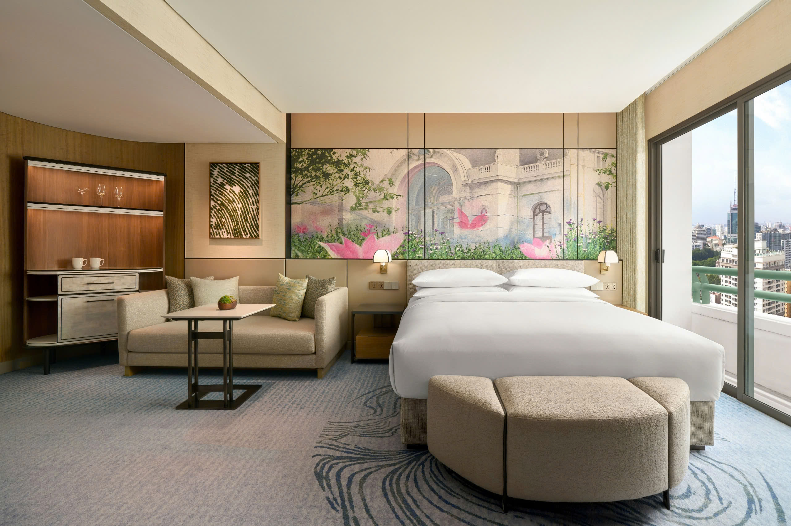
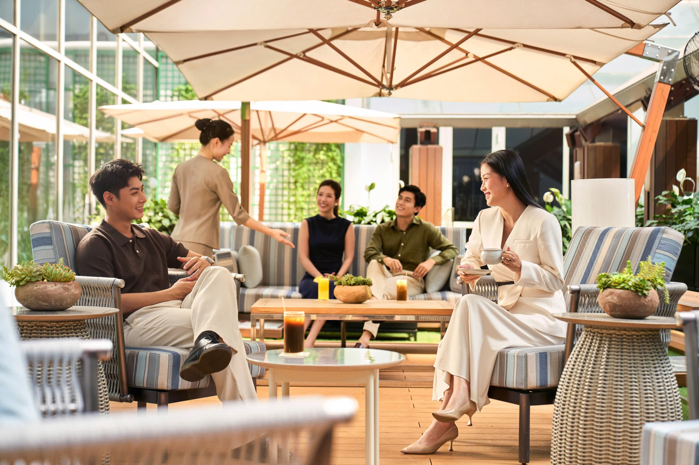
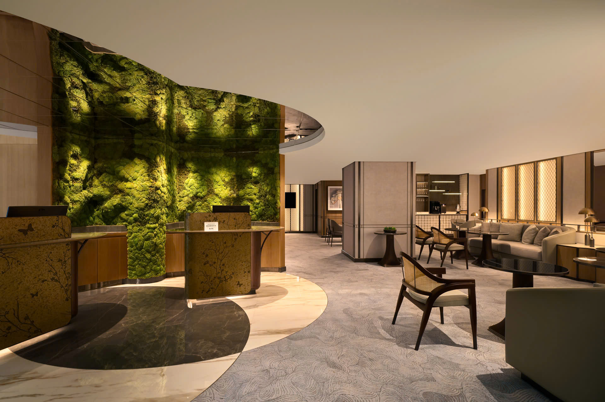
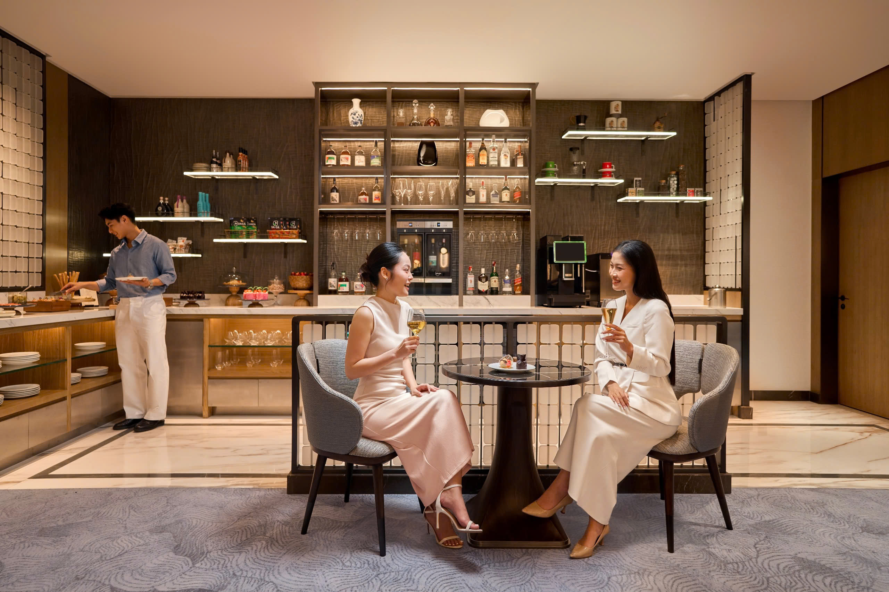
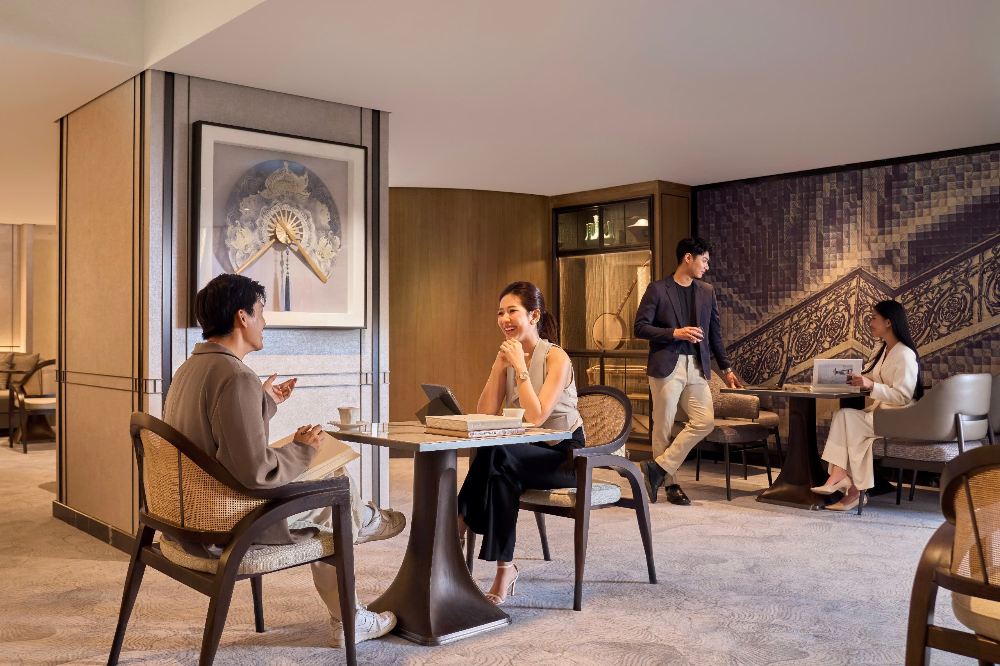
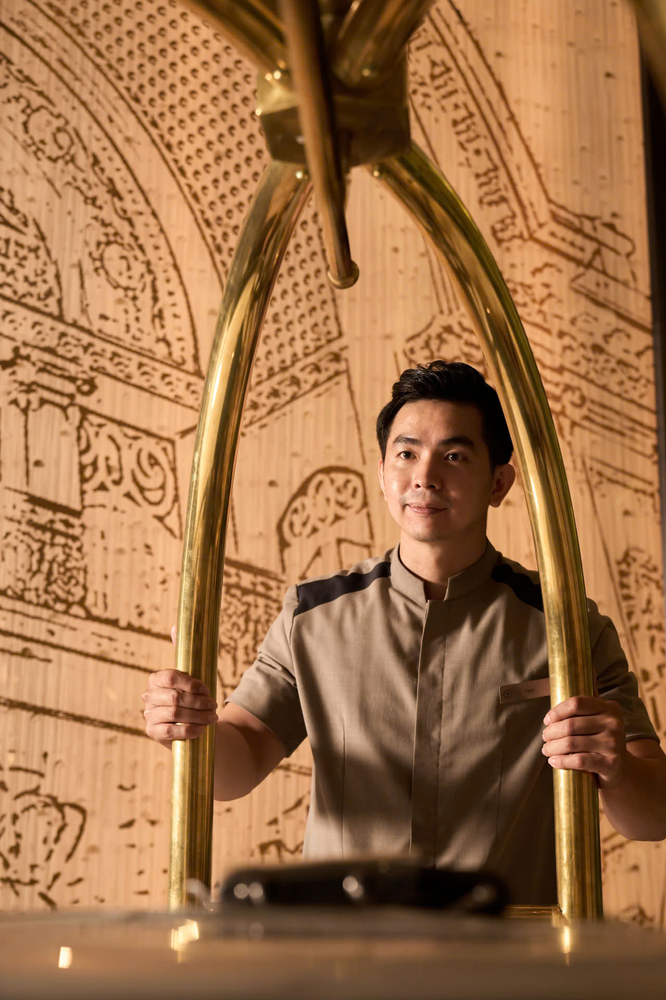

GRAND OPERA TOWER
Định Nghĩa Chuẩn Xa Hoa Đương Đại
Tại Sheraton Saigon Grand Opera Hotel
Tọa lạc trên trục đường Đồng Khởi, tâm điểm văn hóa và thương mại của Thành phố Hồ Chí Minh, Sheraton Saigon Grand Opera Hotel giới thiệu Grand Opera Tower, tòa tháp được định vị như một khách sạn sang trọng trong lòng một khách sạn.
Với triết lý "xa hoa đương đại", nơi đây dung hợp nghệ thuật, thiên nhiên và dịch vụ cá nhân hóa để tái định nghĩa chuẩn mực nghỉ dưỡng hạng sang ngay giữa trung tâm thành phố.
Nội thất cảm hứng
Nhà hát Thành phố
nghệ thuật trở thành ngôn ngữ của sự sang trọng




Kề cận Nhà hát Thành phố – biểu tượng Beaux-Arts hơn một thế kỷ – Grand Opera Tower chuyển hóa tinh thần di sản thành ngôn ngữ nội thất đương đại, tinh tế và giàu cảm xúc. Ngay từ sảnh thang máy tầng trệt, không gian gợi nhớ phòng chờ Opera: tĩnh tại và sang trọng. Bức tranh nghệ thuật khắc nét trên nền họa tiết tuyến tính mô phỏng mặt đứng Nhà hát Thành phố khiến di sản bừng sáng trong hình hài hiện đại.
Nguồn cảm hứng ấy tiếp tục được tôn vinh tại The Salon, sảnh đón khách riêng ở tầng 5, nơi bộ sưu tập nhạc cụ truyền thống và phương Tây được chế tác thủ công dành riêng cho Grand Opera Tower tạo nên dấu ấn văn hóa sâu sắc. Tường mosaic gợi hoa sắt ban công Nhà hát và vách nan tinh giản tại khu bar mang lại nhịp thị giác trang nhã, đậm chất sân khấu.
Dọc hành lang phòng, thảm sàn mô phỏng nhịp điệu âm nhạc và đường cong sông Sài Gòn dẫn bước qua chuỗi phù điêu và mảng rêu nghệ thuật. Trong phòng, tranh đầu giường mang dấu ấn kiến trúc Nhà hát; minibar mang dáng dấp tủ búp phê cổ điển với chi tiết khảm xà cừ; tổng thể kiến tạo nên không gian giàu tính trữ tình. Một số suite sở hữu lounge vòng cung hiếm thấy, mở tầm nhìn hướng sông – gợi cảm giác như đang ngồi giữa khán phòng trước giờ buổi diễn: riêng tư, bồng bềnh, hòa nhịp cùng thành phố.

Nếu nghệ thuật là linh hồn của Grand Opera Tower, thì thiên nhiên chính là nhịp thở nuôi dưỡng toàn bộ không gian. Tòa tháp được kiến tạo như một ốc đảo tĩnh lặng giữa trung tâm đô thị, nơi sắc xanh hiện diện có chủ đích từ sảnh đến phòng khách. Nổi bật nhất là tường cây rậm rạp tại sảnh thang máy, quy tụ hơn 10 loài thực vật nhiệt đới như dương xỉ, trầu bà, được viền đá tối màu tạo tương phản thanh nhã. Tường cây vận hành như hệ sinh thái nội thất sống, lọc không khí tự nhiên, để mỗi bước chân như đi trong một “khu rừng tĩnh tại” giữa kiến trúc sang trọng.
Liệu pháp thiên nhiên được nối tiếp bằng hệ thống rêu bố trí xuyên suốt: rêu tự nhiên ẩn sau ô gió nội thất; tường rêu nghệ thuật bao phủ quầy lễ tân của sảnh đón riêng The Salon; tổ hợp rêu - phù điêu thạch cao dọc hành lang; và tranh rêu uốn lượn trong từng phòng. Sự sắp đặt nhiều lớp này tạo nhịp xanh xuyên chuyển, đưa cảm giác bình an lan tỏa từ khoảnh khắc nhận phòng đến khi khép lại ngày lưu trú.
Tại không gian ngoài trời tầng năm, tinh thần nhiệt đới thăng hoa với hồ bơi nước muối xử lý tự nhiên (thay chlorine) duy trì 32°C quanh năm, bao quanh bởi vườn cây và cụm ghế thư giãn như một ốc đảo riêng tư. Hệ ánh sáng được tính toán cẩn trọng để khi đêm xuống, cảnh quan vừa êm dịu vừa giàu nhịp điệu. Kề bên là Garden on the Fifth rộng 180 m² – không gian tích hợp cho yoga, Pilates, thể thao dưới nước – liên kề lounge ngoài trời của Sheraton Club.
The Salon
Đỉnh cao dịch vụ cá nhân hoá của chuẩn mực đương đại

Tọa lạc biệt lập tại tầng 5, The Salon là lounge riêng tư dành riêng cho khách lưu trú của Grand Opera Tower, một không gian đón tiếp tinh tuyển, nơi nhận và trả phòng được thực hiện theo quy trình ưu tiên và tuyệt đối riêng tư.
Từ ban mai đến đêm muộn, The Salon vận hành như một dòng chảy trải nghiệm liền mạch: bữa sáng thủ công mở đầu ngày mới trong sự tĩnh tại; trà chiều trang nhã nâng niu nhịp nghỉ ngơi; và cocktail tối mang phong vị Sài Gòn khép lại hành trình bằng những nốt hương vị tinh tế. Song song với nghệ thuật ẩm thực cả ngày là đặc quyền cá nhân hóa được tinh chỉnh theo gu của từng vị khách: dịch vụ đánh thức với trà hoặc cà phê phục vụ tận phòng, chăm sóc trang phục và đánh giày, chỉnh trang phòng mỗi tối cùng tiện nghi chăm sóc sức khỏe tuyển chọn - tất cả phối hợp nhịp nhàng để kiến tạo cảm giác thanh nhàn và phong thái sống đúng chuẩn thượng lưu.

Quy tụ tinh thần hiếu khách của Sài Gòn và chuẩn mực quốc tế của Sheraton, đội ngũ tại The Salon mang đến cung cách phục vụ thượng hạng nhưng không xa cách, sang trọng mà vẫn ấm áp. Không chỉ là một lounge riêng biệt, The Salon chính là trái tim dịch vụ của Grand Opera Tower, nơi toàn bộ hành trình, từ nhận phòng, trải nghiệm trong ngày, đến trả phòng đều được cá nhân hóa để chạm tới chuẩn xa hoa đương đại một cách tự nhiên và tinh tế nhất.

